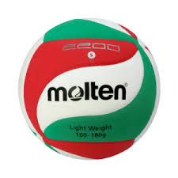

üèê Mejores Jugadores
 Giba
(Brasil)
Giba
(Brasil)
 Wilfredo León
(Cuba/Polonia)
Wilfredo León
(Cuba/Polonia)


üîù Mejores Pelotas de V√≥ley

Molten FLISTATEC
3.jpeg) Wilson AVP (beach volley)
Wilson AVP (beach volley)
 Tachikara SV5W Gold
Tachikara SV5W Gold